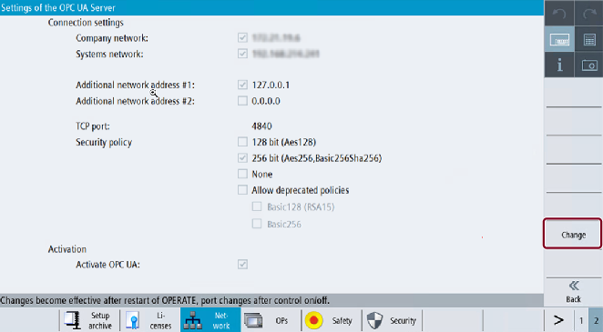
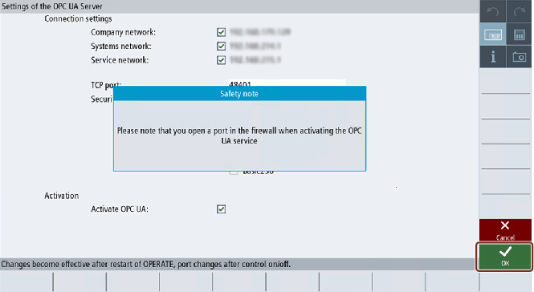
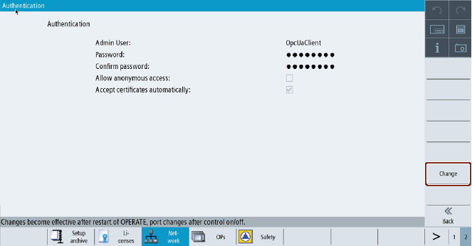

Make sure that the HMI time is set correctly, since this is a prerequisite for encrypted communication.
| Note |
|
The certificate needed for secure OPC UA communication is automatically created during the first run-up. The start date of the validity period of the certificate is set to the current date. The validity period is 20 years. If the SINUMERIK system time is subsequently changed, so that it lies outside the validity period, the secure OPC UA communication does not function (BadCertificateTimeInvalid). The certificate can also be changed manually, as described in chapter Certificates dialog. |
Start the OPC UA configuration dialog via the operating area "Startup > Network".
Press the "OPC UA" softkey.
Press the "Setting" softkey. The Settings dialog will appear. Then press the "Change" softkey. Make the necessary settings for connection and activation.
Settings of OPC UA Server (with changes)
Group | Setting | Description | |
|---|---|---|---|
Connection settings |
| The available network connections (IP address) on a specific target system (SINUMERIK ONE, and IPC) are shown. The available networks options vary depending on your target system.
For example, IPC, there will be only two networks (company and systems (machine) network) displayed. OPC UA clients running on the same IPC as the OPC UA server can reach the server through the company or system network IP addresses. The OPC UA server can only be reached through local host address (127.0.0.1) if stated in the list of network addresses. It is possible to activate or deactivate an interface from OPC UA server point of view. | |
| All the windows devices will allow two additional IP address so that third interface of IPC can be utilized. If the additional IP address is not valid then the OPC UA server cannot be reached. It is possible to activate or deactivate an interface from OPC UA server point of view. | ||
TCP port | TCP port at which the OPC UA server should be available. Standard configuration: 4840 Note The port must also be open in the firewall. For NCU this happens automatically. With IPC the port must be opened manually in the firewall. | ||
Security policy | You can choose from the following settings, which security policy should be offered from the server: | ||
Setting | Standard configuration | ||
128 bit (Aes128) | Deactivated. | ||
256 bit (Aes256, Basic256Sha256) | Activated. | ||
None | Deactivated. | ||
Allow deprecated policies | Deactivated. Place the checkmark to activate the deprecated security policies and remove the checkmark to deactivate it. Deprecated security policies:
| ||
Note
| |||
Activation | Activate OPC UA | Place the checkmark to activate OPC UA and remove the checkmark to deactivate it. | |
| Notice |
Security risk due to data manipulation and data sniffingAnonymous access can be a security risk. Anonymous access should therefore be strictly limited to commissioning.
|
| Notice |
Security risk due to data manipulation and data sniffingIf no message encryption to the client is established, there will be a security risk of data manipulation and data sniffing. It is therefore highly recommended to establish a message encryption to the client.
|
| Note |
DNS based addressingIf you want to contact the OPC UA server via host name you have to do the following steps:
Now the OPC UA server can be addressed via host name. For:
For addressing the OPC UA server via company network, you must ensure that the central DNS server uses the same host name as given in SINUMERIK Operate. |
Then press "OK". If you enter a port for the first time, you will receive a safety note.
Safety note opening TCP port
| Note |
Port opening on IPCOn first startup of OPC UA server, a windows message appears, asking to confirm the opening of the port. |
To confirm the opening of the port, press "OK".
To perform the authentication settings, press "Back", and then press the "Authentication" softkey. The Authentication dialog box appears.
Press the "Change" softkey. Make the necessary settings for authentication.
Authentication settings of OPC UA server
Group | Setting | Description |
|---|---|---|
Authentication | Admin User | User name of the administrator. The administrator can add or delete users and assign or delete user authorizations. |
Password | Password of the administrator. Note: The password must be at least 8 characters long and should not exceed a maximum of 120 characters. | |
Confirm Password | Enter the password again for confirmation. | |
Allow anonymous access | Standard configuration: Deactivated Anonymous access is only recommended for commissioning. | |
Accept certificates automatically | Standard configuration: Activated If this option is set, all client certificates are automatically accepted. For manual acceptance, please refer to chapter Certificates dialog. |
| Note |
Assigning secure passwordsObserve the following rules when creating new passwords:
The provides additional rules for creating secure passwords. Programs are available that can help you to manage your passwords. Using these programs, you can encrypt, save and manage your passwords and secret numbers – and also create secure passwords. |
| Note |
If you want to change the password later, you can do this via the OPC UA method "ChangeMyPassword" or in the SINUMERIK Operate screen. |
If settings are all done, restart is necessary to activate the new settings. Perform a hardware restart on the target system NCU. A restart of the SINUMERIK Operate is necessary on the IPC.